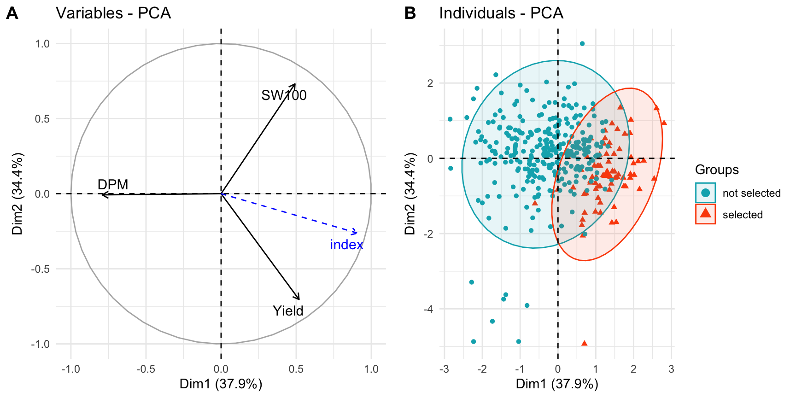

library(dplyr)
library(tidyr)
library(readr)
library(ggplot2)
library(lme4)
library(emmeans)8 Selection Decisions: Ranking, Expected Gain and Selection Indices
Author: Luis Fernando Delgado Muñoz
Session: Day 3, Wednesday 11 November
8.1 Learning objectives
- Rank lines from BLUEs and BLUPs and compare them with the checks
- Predict the genetic gain of a selection with the breeder’s equation, and compare the prediction with a realized gain
- Explain why selecting on one trait is not enough and build a multi-trait selection index
- Choose and justify the weights of an index, and know the limits of a base index
Chapter 7 gave us the estimates (BLUEs and BLUPs) and the heritability of each trait. This chapter uses them to decide: which lines to advance, how much gain to expect, and how to select on several traits at the same time. We continue with the bean trial and keep the same data preparation.
beans <- read_csv("data/Example_Beans.csv", show_col_types = FALSE) |>
mutate(rep = factor(rep), line = factor(line),
rb = factor(paste(rep, block, sep = ":"))) # block inside replicate
checks <- beans |> filter(!is.na(YdHa_clean)) |> count(line) |> filter(n > 2) |> pull(line)8.2 From estimates to a ranking
For each of five traits we fit the two models of Chapter 7: the model with fixed lines (BLUEs) and the model with random lines (BLUPs and the genetic standard deviation).
fit_trait <- function(trait) {
x <- beans |> filter(!is.na(.data[[trait]])) |> mutate(y = .data[[trait]])
m_fix <- lmer(y ~ rep + line + (1 | rb), data = x) # BLUE
be <- as.data.frame(emmeans(m_fix, ~ line, lmer.df = "asymptotic"))
m_ran <- lmer(y ~ rep + (1 | rb) + (1 | line), data = x) # BLUP
mu <- fixef(m_ran)["(Intercept)"] + fixef(m_ran)["repR2"] / 2
list(blue = data.frame(line = be$line, BLUE = be$emmean),
blup = data.frame(line = rownames(ranef(m_ran)$line),
BLUP = mu + ranef(m_ran)$line[, 1]),
sd_g = sqrt(as.data.frame(VarCorr(m_ran))$vcov[1]))
}
traits <- c(Yield = "YdHa_clean", DF = "DF", DPM = "DPM", PLHA = "PLHA", SW100 = "SW100")
fits <- lapply(traits, fit_trait)
collect <- function(what) { # one table, one column per trait
Reduce(\(a, b) inner_join(a, b, by = "line"),
lapply(names(fits), \(t) setNames(fits[[t]][[what]], c("line", t))))
}
blue <- collect("blue")
blup <- collect("blup")
sd_g <- sapply(fits, `[[`, "sd_g") # genetic standard deviation of each trait
head(blue, 3) line Yield DF DPM PLHA SW100
1 ACC_002 1456.3823 39.24864 79.94415 28.51760 49.64092
2 ACC_003 908.1405 46.99363 83.32727 24.30038 48.93574
3 ACC_004 712.0953 40.28507 81.69511 23.92066 53.51706We select among the test lines. The 16 checks are not candidates; they are the reference.
test_blue <- blue |> filter(!line %in% checks)
test_blup <- blup |> filter(!line %in% checks)
n_plots <- beans |> filter(!is.na(YdHa_clean)) |> count(line, name = "plots")
test_blup |>
select(line, BLUP = Yield) |>
left_join(select(test_blue, line, BLUE = Yield), by = "line") |>
left_join(n_plots, by = "line") |>
arrange(desc(BLUP)) |>
head(10) |>
mutate(across(c(BLUP, BLUE), round)) line BLUP BLUE plots
1 SEF_060 1936 2424 2
2 DAB_366 1855 2267 2
3 DAB_577 1817 2184 2
4 DOR_390 1783 2122 2
5 DOR_364 1772 2121 2
6 LPA_435 1721 1992 2
7 DAN_012 1704 1988 2
8 DAA_001 1671 1947 2
9 DAB_049 1668 1924 2
10 SER_118 1660 1901 2A selection of the best 20% of the 364 test lines is 73 lines. The lists by BLUP and by BLUE share 70 of them: for a trait like yield, with similar replication in most lines, they agree. They differ in only 3 lines, those where the replication or the block makes the BLUE and the BLUP disagree.
k <- round(0.20 * nrow(test_blue))
top_blue <- test_blue$line[order(-test_blue$Yield)][1:k]
top_blup <- test_blup$line[order(-test_blup$Yield)][1:k]
c(selected = k, shared_by_BLUE_and_BLUP = length(intersect(top_blue, top_blup))) selected shared_by_BLUE_and_BLUP
73 70 # the checks as reference
c(checks_mean_BLUE = mean(blue$Yield[blue$line %in% checks]),
test_lines_mean_BLUE = mean(test_blue$Yield),
best_check_BLUP = max(blup$Yield[blup$line %in% checks])) checks_mean_BLUE test_lines_mean_BLUE best_check_BLUP
1516.856 1357.573 1757.469 The mean of the checks (1517 kg/ha) is above the mean of the test lines (1358 kg/ha): the checks are good varieties, so a test line must be compared with them and not only with the trial mean. As in Chapter 6, a reference decided before the trial and the confidence interval of the difference are what turn a ranking into a decision.
8.3 Expected genetic gain
How much will the next generation improve if we select the best 20%? The breeder’s equation gives the answer:
R = i × h² × σP
R = response to selection (gain per cycle), in the units of the trait
i = selection intensity (standardized selection differential)
h² = heritability on the basis of the selection unit
σP = phenotypic standard deviation of the selection unitIt is the same equation as the genetic gain equation of the Wageningen course, \(R = i \, r \, \sigma_A / t\), where \(r\) is the accuracy of selection (the square root of the heritability for a selection on means) and \(t\) the length of the cycle. The selection intensity depends only on the proportion selected:
p <- c(0.05, 0.10, 0.20, 0.50)
data.frame(proportion_selected = p,
intensity_i = round(dnorm(qnorm(1 - p)) / p, 2)) proportion_selected intensity_i
1 0.05 2.06
2 0.10 1.75
3 0.20 1.40
4 0.50 0.80For the bean yield, with the entry-mean heritability of Chapter 7 (0.54) and the genetic standard deviation (221 kg/ha), selecting 20% gives:
i <- dnorm(qnorm(0.80)) / 0.20 # 1.40
H2 <- 0.54 # Cullis heritability of yield (chapter 7)
R <- i * sqrt(H2) * sd_g["Yield"] # i * H2 * sigma_P = i * sqrt(H2) * sigma_g
c(gain_kg_ha = unname(R), gain_percent = unname(100 * R / mean(test_blue$Yield))) gain_kg_ha gain_percent
227.14634 16.73179 An expected gain of about 227 kg/ha, 17% of the mean yield, in the same environment. The gain in other environments is smaller when there is G×E (Chapter 11).
8.3.1 Predicted and realized gain, with real data
We can test the equation with the data. Each test line is in two replicates. We select the best 20% by their yield in replicate 1 only, and measure how much better they are in replicate 2, which was not used for the selection. The prediction uses the heritability of a single plot:
w <- beans |> filter(!is.na(YdHa_clean)) |> group_by(line) |> filter(n() == 2) |> ungroup()
j <- inner_join(filter(w, rep == "R1") |> select(line, y1 = YdHa_clean),
filter(w, rep == "R2") |> select(line, y2 = YdHa_clean), by = "line")
selected <- j$y1 >= quantile(j$y1, 0.80)
vcw <- as.data.frame(VarCorr(lmer(YdHa_clean ~ rep + (1 | rb) + (1 | line), data = w)))
Vg <- vcw$vcov[1]; Vb <- vcw$vcov[2]; Ve <- vcw$vcov[3]
h2_plot <- Vg / (Vg + Vb + Ve) # one raw plot: blocks and error are "noise"
c(lines = nrow(j),
observed_in_selection = mean(j$y1[selected]) - mean(j$y1),
predicted_gain = i * h2_plot * sqrt(Vg + Vb + Ve),
realized_gain = mean(j$y2[selected]) - mean(j$y2)) lines observed_in_selection predicted_gain
360.0000 604.9570 166.1910
realized_gain
147.4172 The equation predicts a gain of 166 kg/ha, and the realized gain in the independent replicate is 147 kg/ha: the prediction is close, slightly optimistic. But look at the first number: in the replicate where we selected, the chosen lines looked 605 kg/ha better than the mean. Only about a quarter of that advantage (147 kg/ha) was real. This is the selection bias of Chapter 6, now measured on one trial. A selection on a single plot overestimates the gain by a factor of four; this is why we select on BLUPs of several plots and, when we can, in several environments.
8.4 Why one trait is not enough
Breeders do not select only for yield. A line must also flower and mature at the right time, have the right seed size and the right plant type. If we select on yield alone, the other traits change as a side effect, in a direction that we did not choose.
index_traits <- c("Yield", "SW100", "DPM")
yield_only <- test_blue$line[order(-test_blue$Yield)][1:k]
# selection differential: mean of the selected lines minus mean of all test lines
diff_sel <- function(lines, vars = index_traits) {
colMeans(test_blue[test_blue$line %in% lines, vars]) - colMeans(test_blue[, vars])
}
round(diff_sel(yield_only), 1)Yield SW100 DPM
415.8 -1.0 -0.2 Selecting on yield gives 416 kg/ha more yield, and almost no change in seed weight or maturity. In this trial yield is nearly independent of the other traits, so a selection on yield alone does no harm but does not improve earliness or seed weight either. Where traits are correlated the side effects are larger: days to flowering and days to maturity have a correlation of 0.78.
round(cor(test_blue[, c("Yield", "DF", "DPM", "PLHA", "SW100")]), 2) Yield DF DPM PLHA SW100
Yield 1.00 -0.12 -0.11 0.23 -0.03
DF -0.12 1.00 0.78 -0.03 -0.06
DPM -0.11 0.78 1.00 -0.06 -0.11
PLHA 0.23 -0.03 -0.06 1.00 -0.24
SW100 -0.03 -0.06 -0.11 -0.24 1.008.5 The selection index
A selection index combines several traits in one number per line, and we select the lines with the highest value. The simplest is the base index:
I = b1 × z1 + b2 × z2 + ... + bk × zk
zj = standardized trait j (value minus mean, divided by the standard deviation)
bj = weight of trait jThree rules make it usable:
- The sign of the weight sets the direction. Positive when higher is better (yield, seed weight), negative when lower is better (days to maturity, disease score, lodging).
- Only the ratios between the weights matter. Weights of 1, 0.5 and 0.5 give the same ranking as 10, 5 and 5. They are relative importances that the breeder decides, not economic values unless we define them so.
- Weights are for traits in standard deviation units. Because the traits are standardized, a trait with a large range does not dominate just because of its units.
The base index ignores the covariances among traits and the heritabilities. The Smith-Hazel index (Smith, 1936; Hazel, 1943) uses them: the weights that maximize the correlation between the index and the true breeding value are \(\mathbf{b} = \mathbf{P}^{-1}\mathbf{G}\mathbf{a}\), with \(\mathbf{P}\) the phenotypic and \(\mathbf{G}\) the genetic covariance matrix and \(\mathbf{a}\) the economic weights. It is more efficient, but it needs good estimates of \(\mathbf{G}\) and \(\mathbf{P}\), which require a multi-trait mixed model and many lines. For the first selection stages and for this course, the base index with weights that the breeder understands is the practical choice (Williams, 1962).
8.5.1 A function for the index and its PCA plot
The function below calculates the index, selects a percentage of the lines and draws a PCA that shows where the selected lines are. It has been adapted from the selection index function that we use in our own breeding work, with the following changes with respect to a basic version:
- The weights are a named vector, so that a change in the column order cannot send a weight to the wrong trait.
- Lines with a missing trait are reported with a warning (a line without one value cannot be ranked, and silently putting it last means it is never selected).
- The index is a supplementary variable of the PCA: it is shown as an arrow, but it does not shape the axes that it is supposed to explain.
- An optional
sd_refallows standardizing by a reference standard deviation (for example the genetic standard deviation) instead of the standard deviation of the data.
selIndex <- function(Y, b, scale = TRUE, sd_ref = NULL) {
# b: named vector of weights (positive: higher is better; negative: lower is better)
b <- b[colnames(Y)]
if (anyNA(b)) stop("Every column of Y needs a weight in b (named vector).")
if (!is.null(sd_ref)) { # standardize by a reference SD (e.g. genetic SD)
Z <- sweep(sweep(Y, 2, colMeans(Y), "-"), 2, sd_ref[colnames(Y)], "/")
} else if (scale) Z <- scale(Y) else Z <- Y
drop(Z %*% b)
}
pca_index <- function(data, id, b, percentage = 0.20, sd_ref = NULL) {
data <- as.data.frame(data)
traits <- names(b)
if (!all(traits %in% names(data))) stop("Some traits of b are not columns of data.")
# lines with a missing trait cannot be ranked: report them, do not drop them silently
miss <- !complete.cases(data[, traits])
if (any(miss)) {
warning(sum(miss), " line(s) with missing values were removed: ",
paste(data[[id]][miss], collapse = ", "))
data <- data[!miss, ]
}
Y <- as.matrix(data[, traits]); rownames(Y) <- data[[id]]
res <- data.frame(Y, index = selIndex(Y, b, sd_ref = sd_ref))
res <- res[order(-res$index), ]
n_sel <- max(1, round(percentage * nrow(res)))
res$selected <- factor(seq_len(nrow(res)) <= n_sel, levels = c(FALSE, TRUE),
labels = c("not selected", "selected"))
# the index is a supplementary variable: it does not shape the axes
pca <- FactoMineR::PCA(res, scale.unit = TRUE, graph = FALSE,
quanti.sup = which(names(res) == "index"),
quali.sup = which(names(res) == "selected"))
p1 <- factoextra::fviz_pca_var(pca, col.var = "black", repel = TRUE) + theme_minimal()
p2 <- factoextra::fviz_pca_ind(pca, label = "none", habillage = res$selected,
palette = c("#00AFBB", "#FC4E07"), addEllipses = TRUE) +
theme_minimal()
list(pca = pca, figure = cowplot::plot_grid(p1, p2, labels = c("A", "B")),
results = res, selection = res[res$selected == "selected", ])
}8.5.2 Running the index
We choose three traits: yield (weight 1), seed weight (weight 0.5) and days to maturity (weight -0.5, because earlier lines are preferred). Days to flowering are left out because they are strongly correlated with maturity (0.78): including both would count the same information twice.
b_index <- c(Yield = 1, SW100 = 0.5, DPM = -0.5)
res <- pca_index(test_blue, id = "line", b = b_index, percentage = 0.20)
res$figure
The figure explains the result. In A, yield and seed weight point toward the index, and days to maturity points in the opposite direction, as it should with a negative weight. In B, the selected lines are grouped on the side where the index grows.
head(res$selection, 6) |> mutate(across(c(Yield, SW100, DPM, index), \(x) round(x, 1))) Yield SW100 DPM index selected
DAB_577 2183.6 66.5 81.1 3.9 selected
DAB_366 2267.1 57.4 82.0 3.2 selected
DAA_166 1817.1 62.8 80.3 2.7 selected
DAA_014 1551.8 66.4 78.8 2.7 selected
DAB_591 1853.3 56.4 79.6 2.7 selected
DAA_062 1758.6 68.7 81.2 2.6 selectedWhat did this selection change, compared with selecting on yield alone?
data.frame(
trait = index_traits,
yield_only = round(diff_sel(yield_only), 1),
index_of_3 = round(diff_sel(rownames(res$selection)), 1),
row.names = NULL
) trait yield_only index_of_3
1 Yield 415.8 349.3
2 SW100 -1.0 3.7
3 DPM -0.2 -0.8The index gives up 67 kg/ha of yield gain (349 instead of 416) to gain 3.7 g in the weight of 100 seeds and to bring maturity forward by 0.8 days. That is the price of the other traits, and it is explicit. The mean yield of the selected lines is 1707 kg/ha, above the mean of the checks (1517 kg/ha).
8.5.3 How much do the weights matter?
The weights are a decision, so it is worth knowing how sensitive the selection is to them. We compare the lines selected by other sets of weights with the base set:
scenarios <- list(
"base (1, 0.5, -0.5)" = c(Yield = 1, SW100 = 0.5, DPM = -0.5),
"base x 10 (10, 5, -5)" = c(Yield = 10, SW100 = 5, DPM = -5),
"equal importance (1, 1, -1)" = c(Yield = 1, SW100 = 1, DPM = -1),
"yield counts double (2, 0.5, -0.5)" = c(Yield = 2, SW100 = 0.5, DPM = -0.5),
"no earliness (1, 0.5, 0)" = c(Yield = 1, SW100 = 0.5, DPM = 0),
"yield only (1, 0, 0)" = c(Yield = 1, SW100 = 0, DPM = 0))
base_sel <- rownames(res$selection)
data.frame(
weights = names(scenarios),
shared_with_base = sapply(scenarios, \(b) {
s <- pca_index(test_blue, id = "line", b = b, percentage = 0.20)
length(intersect(rownames(s$selection), base_sel))
}),
row.names = NULL) weights shared_with_base
1 base (1, 0.5, -0.5) 73
2 base x 10 (10, 5, -5) 73
3 equal importance (1, 1, -1) 62
4 yield counts double (2, 0.5, -0.5) 65
5 no earliness (1, 0.5, 0) 61
6 yield only (1, 0, 0) 53Multiplying all the weights by 10 selects exactly the same 73 lines. Changing the ratios changes between 8 and 20 of the 73 lines. A selection that changes a few lines when the weights change slightly is robust; the lines that appear in every scenario are the safest candidates.
8.5.4 Traits with low heritability
Plant height has a heritability of only 0.12 (Chapter 7). If we give it a weight in the index with BLUEs standardized by their standard deviation, a trait that is mostly plot error gets the same importance as a trait that is mostly genetic. We can see the effect by adding plant height with the same weight as yield, and counting how many of the 73 lines chosen by yield alone remain:
b_h <- c(Yield = 1, PLHA = 1)
yield_alone <- rownames(pca_index(test_blue, id = "line", b = c(Yield = 1, PLHA = 0))$selection)
with_blue <- pca_index(test_blue, id = "line", b = b_h) # BLUEs, z-scores
with_blup <- pca_index(test_blup, id = "line", b = b_h, sd_ref = sd_g) # BLUPs / genetic SD
c(BLUE_zscores = length(intersect(yield_alone, rownames(with_blue$selection))),
BLUP_over_genetic_sd = length(intersect(yield_alone, rownames(with_blup$selection)))) BLUE_zscores BLUP_over_genetic_sd
46 58 With the BLUE z-scores, only 46 of the 73 lines chosen by yield alone remain: the noisy plant height reshuffles the selection. With the BLUPs divided by the genetic standard deviation, 58 remain: the BLUP of a trait of low heritability is shrunk, and it contributes less to the index, which is what we want. If a trait has a low heritability, either give it a low weight or use BLUPs.
WarningDo not standardize BLUPs by their own standard deviation
If we apply scale() to a column of BLUPs, the shrinkage is undone: the BLUPs of plant height have a standard deviation of 0.30 cm and the BLUEs of 2.5 cm, but after scale() both have a standard deviation of 1. Use the BLUEs, or standardize the BLUPs by the genetic standard deviation (sd_ref), as above.
8.6 Exercise
You want an early bean line. Build an index with yield (weight 1), days to flowering (weight -0.5) and days to maturity (weight -0.5), and select the best 10% of the test lines.
- How many lines are selected? Which are the five best?
- What is the selection differential of each of the three traits?
- How many of the lines are also in the 20% selected by the base index of this chapter?
- What is the mean yield of the selected lines compared with the mean of the checks?
- Days to flowering and maturity have a correlation of 0.78. What does this do to the weights of the index?
TipSolution
b_early <- c(Yield = 1, DF = -0.5, DPM = -0.5)
early <- pca_index(test_blue, id = "line", b = b_early, percentage = 0.10)
# 1. Number and five best lines
nrow(early$selection)
head(rownames(early$selection), 5)
# 2. Selection differentials
vars <- names(b_early)
round(colMeans(early$selection[, vars]) - colMeans(test_blue[, vars]), 1)
# 3. Overlap with the base index (20%)
length(intersect(rownames(early$selection), rownames(res$selection)))
# 4. Mean yield of the selected lines and of the checks
c(selected = mean(early$selection$Yield),
checks = mean(blue$Yield[blue$line %in% checks]))
# 5. Compare with an index that uses only maturity
only_dpm <- pca_index(test_blue, id = "line", b = c(Yield = 1, DPM = -1), percentage = 0.10)
length(intersect(rownames(early$selection), rownames(only_dpm$selection)))The 36 selected lines (10% of 364) include SEF_060, DAB_577, DAB_591, DAB_520 and DAB_366. Compared with the mean of the test lines they have +428 kg/ha of yield, 2.3 days less to flowering and 1.3 days less to maturity. Thirty-three of the 36 are also in the 20% of the base index. Their mean yield is 1786 kg/ha, against 1517 kg/ha for the checks. Because flowering and maturity are correlated, giving a negative weight to both doubles the importance of earliness in the index: the total weight on earliness (-1) is the same as the weight on yield. If earliness is meant to count half as much as yield, use weights of -0.25 for each of the two traits, or only one of them. An index with only maturity (weight -1) shares 29 of the 36 lines with this one, so using both traits does change the selection.
8.7 Key takeaways
- Select test lines from BLUPs (or BLUEs with their precision) and compare them with the checks, not only with the trial mean.
- The breeder’s equation, \(R = i \, h^2 \, \sigma_P\), predicts the gain; in the bean trial it predicted 166 kg/ha and the realized gain was 147 kg/ha.
- The advantage seen in the selected lines is mostly selection bias: 605 kg/ha observed, 147 kg/ha real. Select on BLUPs of several plots and confirm.
- Selecting on one trait changes the others as a side effect. A base index combines standardized traits with weights; the sign gives the direction and only the ratios matter.
- Check how sensitive the selection is to the weights, and do not give a low-heritability trait the same weight as a reliable one, unless the index uses BLUPs standardized by the genetic standard deviation.
- Do not put correlated traits in the index with the same sign without thinking: the information is counted twice.
- The Smith-Hazel index uses the covariance matrices and is more efficient, but it needs reliable estimates of them; for early stages the base index is the practical choice.
8.8 References
- Falconer, D. S., & Mackay, T. F. C. (1996). Introduction to Quantitative Genetics (4th ed.). Longman.
- Hazel, L. N. (1943). The genetic basis for constructing selection indices. Genetics, 28(6), 476-490. https://doi.org/10.1093/genetics/28.6.476
- Husson, F., Lê, S., & Pagès, J. (2017). Exploratory Multivariate Analysis by Example Using R (2nd ed.). CRC Press. (FactoMineR)
- Kassambara, A., & Mundt, F. (2020). factoextra: Extract and Visualize the Results of Multivariate Data Analyses. R package. https://CRAN.R-project.org/package=factoextra
- Smith, H. F. (1936). A discriminant function for plant selection. Annals of Eugenics, 7(3), 240-250. https://doi.org/10.1111/j.1469-1809.1936.tb02143.x
- Williams, J. S. (1962). The evaluation of a selection index. Biometrics, 18(3), 375-393. https://doi.org/10.2307/2527479
- Bustos-Korts, D., Adams, J., & van Eeuwijk, F. (2021). Genotype to phenotype modelling of multi-environment trials, course materials. Biometris, Wageningen University and Research.